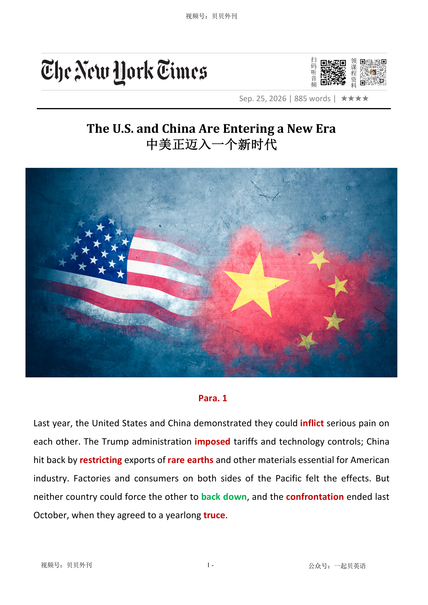

02 HEADLINE / 标题中英文解释
The U.S. and China Are Entering a New Era
中美正迈入一个新时代

The U.S. and China Are Entering a New Era
中美正迈入一个新时代
文章讨论中美在白宫会晤所释放的信号，核心观点是两国经历过去一年的贸易、技术和资源对抗后，已经进入一种必须学会长期共处的新阶段。
开头回顾去年双方互相施压的过程：美国对中国加征关税并实施技术管制，中国则限制稀土和其他关键材料出口，工厂与消费者都受到冲击；但结果证明，任何一方都无法迫使另一方彻底让步，最终只能达成一年休战。
随着休战期临近结束，文章认为这次会晤是一个关键机会，双方应放弃“彻底赢下对方”的幻想，转向更稳定、可持续的缓和关系。
中段分析双方实力结构：美国在金融、芯片设计、芯片制造设备和最先进 AI 模型上领先，中国则拥有全球最大出口能力、稀土和关键矿产优势，以及快速扩散的低成本开源 AI 模型。
正因为双方各有王牌，彻底脱钩既不现实也不可取，任何一方武器化某个卡点，都可能招致对方在另一个卡点反击。
文章把这种关系称为冷战逻辑的新版：不是核威慑，而是“相互确保经济扰乱”。
后半部分强调，普通民众并不希望无休止对抗。
美国年轻人更倾向于与中国合作，中国民众也厌倦把经济生活完全服务于国家竞争和对美僵局。
会晤可能只带来有限成果，例如农业贸易姿态，但更重要的是确认长期教训。
文章特别指出 AI 应成为中美沟通的重点，因为 AI 系统可能攻击敏感网络、劫持账户、威胁政治和社会稳定。
双方可以先从勒索软件、关键基础设施漏洞等共同威胁上合作。
结尾呼吁中美都接受现实：极端要求和威胁不符合任何一方利益；建立稳定关系不需要完全互信，只需要足够智慧和克制，让竞争不吞噬其他所有合作空间。
The article is about a new stage in the relationship between the United States and China. Last year, the two countries showed that they could hurt each other.
The United States used tariffs and technology controls. China answered by limiting exports of rare earths and other important materials.
Both factories and consumers felt the pain. But neither side could make the other give up.
In the end, they agreed to a one-year truce. Now that truce is close to ending, and a meeting at the White House may be important.
The article says both countries should stop dreaming that one side can completely win. Instead, they should build a more stable relationship, or détente.
The writer explains why this is necessary. The United States is very strong in finance, chip design, chip-making equipment and advanced AI models.
China is the world’s largest exporter and controls many rare earths, critical minerals and powerful magnets. China is also moving fast in cheap open-weight AI models.
Because both sides have important strengths, neither can land a knockout blow. The article compares the situation with the Cold War, but there is a key difference.
The United States and the Soviet Union traded very little. Today, the American and Chinese economies are deeply connected.
Full decoupling is not realistic. If one side uses one choke point as a weapon, the other side may strike back in another area.
The article also says many ordinary people are tired of confrontation. Young Americans often prefer cooperation with China, and many people in China are also weary of the rat race and constant national competition.
The meeting may only bring small trade deals, but it can still help both governments remember the lessons of the past year. AI is one important topic.
AI systems may attack networks, hijack accounts or threaten social stability. The two countries could begin with shared dangers such as ransomware gangs.
The main message is that the United States and China do not need full trust, but they do need wisdom and restraint. They must keep competition from damaging every other part of the relationship.
中美对峙休战与新会晤契机（Para 1-2） ├─ 过往博弈：美对华关税与技术封锁，中方稀土反制 ├─ 对峙结果：双方互有损伤、无法逼退对方，达成一年休战 └─ 会晤意义：休战到期，有望构建稳定缓和关系 中美实力互补制衡格局（Para 3） ├─ 美国优势：金融、芯片制造、顶尖AI模型领先 ├─ 中国优势：出口、稀土矿产、关键化工与平价AI模型强势 └─ 核心结论：双方各有王牌，无法打出致命一击 新型冷战式制衡关系（Para 4-5） ├─ 历史参照：复刻美苏冷战制衡逻辑，规避全面对抗 ├─ 关键差异：中美经济深度绑定，无法彻底脱钩 └─ 新型制衡：相互经济反噬，升级对抗代价极高 民众诉求与博弈误区（Para 6） ├─ 民众心态：中美民众均厌倦对抗，渴望稳定 ├─ 博弈本质：追求绝对战略胜利徒劳无益 └─ 社会现状：国内内卷加剧，民众更关注自身需求 会晤背景与核心议题（Para 7-8） ├─ 美方动机：大选在即，争取农业贸易政绩 ├─ 核心议题：AI安全风险凸显，成为双方关键共识领域 └─ 风险现状：AI失控或威胁两国政治与社会稳定 缓和沟通的务实方向（Para 9） ├─ 沟通原则：降温止争、保持对话渠道畅通 ├─ 合作切口：联手打击AI勒索软件等共同威胁 └─ 现实预期：难以达成重大突破，博弈仍将持续 双方理性让步的必要性（Para 10） ├─ 美方认知：中国只求自保与国际影响力，无意击垮美方 ├─ 中方反思：武器化资源优势会倒逼美方供应链多元化 └─ 核心结论：极端诉求与威胁有损双方根本利益 长期缓和的深远价值（Para 11） ├─ 稳定价值：管控危机、规避持续经济扰动 ├─ 合作空间：联手应对AI、气候、公共卫生等全球难题 └─ 相处底线：无需完全信任，克制竞争、守住合作基本盘
Last year, the United States and China demonstrated they could inflict使遭受打击 serious pain on each other. The Trump administration imposed迫使 tariffs and technology controls; China hit back by restricting限制 exports of rare earths and other materials essential for American industry. Factories and consumers on both sides of the Pacific felt the effects. But neither country could force the other to back down放弃, and the confrontation对抗 ended last October, when they agreed to a yearlong truce停战协定.
去年，美国与中国都证明了一件事：双方都有能力让对方付出沉重代价。特朗普政府祭出关税和技术管制措施；中国则以限制稀土及其他美国工业不可或缺的关键材料出口予以反制。太平洋两岸的工厂和消费者都切身感受到了冲击。然而，双方谁也无法迫使对方退让。这场对抗最终在去年十月暂时告一段落——两国达成了一项为期一年的休战协议。
With that truce about to end, the meeting on Thursday opens a new chapter that could be pivotal关键性的 for the relationship between the United States and China. The meeting at the White House is an opportunity for the two superpowers超级大国 to embrace the undeniable不可否认的 lessons of the past year and begin building a durable détente by abandoning disruptive引起混乱的 fantasies that either side can decisively “win.”
如今，随着这份休战协议即将到期，周四举行的会晤开启了一段可能决定未来走向的新篇章。在白宫举行的这次会面，为这两个超级大国提供了一个机会：正视过去一年所揭示的无可回避的现实，放弃那些认为自己能够彻底“战胜”对方的危险幻想，从而构建一种持久的缓和关系。
Beijing and Washington now know that neither can land a knockout彻底击败对手的 blow because each possesses formidable可怕的 advantages that the other struggles to match. America has unrivaled无与伦比的 financial power and leads in semiconductor design, in making the equipment essential for chip manufacturing and in the most advanced artificial intelligence models. China is the world’s largest exporter. It dominates the global supply of rare-earth elements and critical minerals and the production of the high-powered magnets vital for advanced electronics, cars and weapons. Chinese-made chemicals化学物 and other ingredients成分 are crucial for pharmaceuticals药物 used in America. Regarding A.I., China has shot ahead in providing cheap open-weight开放权重的 models being rapidly adopted around the world, including in the United States.
北京和华盛顿如今都已明白，谁也无法给予对方致命一击。因为双方都拥有对方难以企及的巨大优势。美国拥有无可匹敌的金融实力，在半导体设计领域占据领先地位，掌握着芯片制造所需关键设备的核心技术，并在最先进的人工智能模型研发方面保持优势。而中国则是全球最大的出口国，主导着全球稀土元素和关键矿产资源供应，掌控着先进电子设备、汽车以及武器系统所必需的高性能磁体生产。美国药品制造所依赖的大量化学品及原材料，同样来自中国。在人工智能领域，中国则异军突起，以低成本的开源权重模型迅速占领市场。这些模型正在全球范围内被广泛采用，甚至包括美国本土。
Building a lasting détente could prove as consequential随之而来的 for history as Cold War coexistence共处 was for the United States and the Soviet Union. During the Cold War, the nuclear arms race军备竞赛 and the prospect of mutually assured destruction caused Washington and Moscow to pull back from the brink悬崖勒马. The same calculus微积分 holds保持不变 today, but with an important difference: U.S.-Soviet trade was minimal极小的, but the Chinese and American economies are deeply interdependent相互依存的.
建立一种长期稳定的缓和关系，其历史意义或许将不亚于冷战时期美国与苏联之间的和平共存。在冷战年代，核军备竞赛以及“相互确保毁灭”的恐怖前景，使华盛顿与莫斯科一次次在悬崖边缘收住脚步。今天，相似的逻辑依然存在，但又有所不同。当年的美苏贸易往来寥寥，而如今中美两国经济却早已深度交织、难分彼此。
Even after last year’s trade confrontation drove bilateral双方的 commerce down by 25 percent, China remained America’s third-largest trading partner after Mexico and Canada. Decoupling分离 altogether is neither possible nor desirable, and attempts to weaponize使…武器化 one choke point咽喉要道 invite招致 sharp retaliation报复 through another. What Washington and Beijing now face is an updated version of the Cold War’s deterrent威慑因素: mutually assured economic disruption. That is the logic of détente — the realization that continued escalation would be too costly花钱多的.
即便去年的贸易冲突导致双边贸易额下降了25%，中国依然是美国仅次于墨西哥和加拿大的第三大贸易伙伴。彻底脱钩既不现实，也不可取。任何试图将某个“卡脖子”环节武器化的做法，都可能招致对方利用另一关键点展开猛烈报复。华盛顿和北京如今面对的，其实是冷战时期威慑逻辑的升级版——“相互确保经济扰乱”。其缓和核心在于：双方都清楚，持续升级冲突的代价将高得难以承受。
The pursuit of decisive决定性的 economic and strategic victory is futile徒然的, and it is not what the people bearing承担责任 the costs of the resulting disruption want. Many Chinese and American citizens are tiring of confrontation. Young Americans, in particular, favor cooperation with China rather than confrontation. In China, too, people are weary疲劳的, increasingly opting out of the rat race激烈竞争的生活 rather than exhausting themselves in an economy that many see as geared toward national strength and the standoff僵局 with the United States rather than meeting their own needs.
执着于追求经济与战略层面的决定性胜利，终究是徒劳。更重要的是，这也并非那些承担代价的普通民众真正想要的结果。越来越多的中美民众正在对持续对抗感到厌倦。尤其是美国年轻一代，相较于对抗，他们更倾向于与中国展开合作。而在中国，人们同样显露出疲态。越来越多人选择退出无休止的“内卷”，不愿再将全部精力消耗在一种他们认为更服务于国家实力竞争和中美博弈、却未必能满足个人生活需求的经济体系之中。
With U.S. midterm elections looming可能发生, Mr. Trump is no doubt eager to secure agricultural trade deals with China that he can present as wins for U.S. farmers. Thursday’s meeting may yield出产 only modest gestures, but the encounter相遇 offers something more important over the long run从长远来看: a chance for both governments to reaffirm重申 what the past year has made clear.
随着美国中期选举临近，特朗普显然希望与中国达成更多农业贸易协议，以便向美国农民展示自己的政绩成果。周四的会晤或许只能带来一些象征性的进展。但从更长远的角度看，这场会面真正重要的意义在于：它为两国政府提供了一个机会，再次确认过去一年已经反复证明的事实。
Artificial intelligence is expected to be a major topic, and perhaps no issue better illustrates表明…真实 the dangers both countries now face. The warning signs are mounting上升的. In the United States, A.I. systems have tapped into sensitive networks and otherwise behaved unpredictably. And after a California security firm revealed this month that A.I. had helped it find a way to hijack劫持 accounts on WeChat, the dominant Chinese messaging app, A.I. could slip beyond control and threaten political and social stability.
人工智能预计将成为此次会谈的重要议题，而几乎没有哪个问题比它更能体现两国如今共同面临的风险。危险信号正在不断累积。在美国，一些人工智能系统已经接触到敏感网络，并出现了难以预测的行为。而本月，一家加州网络安全公司披露，人工智能帮助其发现了一种能够劫持微信账户的方法。作为中国最主要的即时通讯平台，微信一旦遭到大规模攻击，人工智能便可能突破人类控制，对社会与政治稳定构成威胁。
Such concerns make it all the more important for China and the United States to lower the temperature and keep communication channels open. They could start with discussions that focus initially on common enemies such as ransomware勒索软件 gangs犯罪团伙 that could use A.I. to exploit利用 vulnerabilities in software, networks and critical industries. None of this means this week’s meeting will produce a major breakthrough, or that some grand宏大的 geopolitical bargain协议 is on the horizon即将发生, or that the two nations will stop jostling挤 over trade, technology and global influence.
正因如此，中美两国更有必要为紧张局势降温，并保持畅通的沟通渠道。双方完全可以从一些共同面临的威胁入手展开合作，例如利用人工智能实施攻击的勒索软件犯罪集团。这些组织可能借助人工智能寻找软件、网络以及关键基础设施中的漏洞，并加以利用。当然，这并不意味着本周的会晤会带来重大突破；也不意味着某种宏大的地缘政治交易已经近在眼前；更不意味着中美将在贸易、科技和全球影响力领域停止竞争与角力。
What truly matters is that both absorb the reality that maximalist最大主义者 demands and threats serve neither country’s interests and begin laying the foundations for a more stable future. Washington must understand that China seeks greater influence in the world and less vulnerability to foreign pressure, not to cripple使残废 one of its biggest trading partners. Beijing, for its part, must recognize that every time it weaponizes its dominance of critical metals, it hastens加速 U.S. efforts to diversify使多样化 its own supply chains, thereby eroding逐渐毁坏 China’s leverage影响力 and hardening更坚定 American fears about Beijing’s intentions.
真正重要的是，双方都应当吸取现实给予的教训：极限施压与不断威胁，并不符合任何一方的利益。现在，是时候开始为一个更加稳定的未来奠定基础了。华盛顿必须认识到，中国追求的是在国际事务中拥有更大的影响力，以及减少自身受到外部压力制约的脆弱性，而非摧毁自己最大的贸易伙伴之一。与此同时，北京也应意识到，每当中国将自身在关键金属领域的主导地位作为战略工具时，都在无形中加速美国推动供应链多元化的努力。这不仅会削弱中国未来的筹码，也会进一步强化美国社会对中国战略意图的猜忌。
The larger promise of embracing a durable détente lies not only in avoiding disruption now, but in widening what may become possible. A more stable relationship could create regular communication, make crises easier to manage and open space for sustained and badly needed work on humanity’s biggest challenges, such as A.I., climate change and global health, which neither country can solve alone. This doesn’t require mutual trust, only the wisdom and restraint约束力 to keep competition from consuming the rest of the relationship.
而拥抱持久缓和关系的更大意义，不仅在于避免当下的冲突和动荡，更在于拓展未来的可能性。一个更加稳定的中美关系，可以建立常态化沟通，使危机更容易被管控，并为解决人类共同面临的重大挑战创造空间。无论是人工智能、气候变化，还是全球公共卫生，这些问题都不是任何一个国家能够独自解决的。实现这一切，并不需要彼此完全信任。它所需要的，只是足够的智慧与克制——才能不让竞争吞噬两国关系。
使遭受打击；使吃苦头
to make sb/sth suffer sth unpleasant
They inflicted a humiliating defeat on the home team.他们使主队吃了一场很没面子的败仗。
Last year, the United States and China demonstrated they could inflict serious pain on each other.
去年，美国与中国都证明了一件事：双方都有能力让对方付出沉重代价。特朗普政府祭出关税和技术管制措施；中国则以限制稀土及其他美国工业不可或缺的关键材料出口予以反制。太平洋两岸的工厂和消费者都切身感受到了冲击。然而，双方谁也无法迫使对方退让。这场对抗最终在去年十月暂时告一段落——两国达成了一项为期一年的休战协议。
迫使；把…强加于
to force sb/sth to have to deal with sth that is difficult or unpleasant
to impose limitations/restrictions/constraints on sth强行限制╱管制╱约束某事物
The Trump administration imposed tariffs and technology controls; China hit back by restricting exports of rare earths and other materials essential for American industry.
去年，美国与中国都证明了一件事：双方都有能力让对方付出沉重代价。特朗普政府祭出关税和技术管制措施；中国则以限制稀土及其他美国工业不可或缺的关键材料出口予以反制。太平洋两岸的工厂和消费者都切身感受到了冲击。然而，双方谁也无法迫使对方退让。这场对抗最终在去年十月暂时告一段落——两国达成了一项为期一年的休战协议。
限制，限定（数量、范围等）
to limit the size, amount or range of sth
Speed is restricted to 30 mph in towns.在城里车速不得超过每小时30英里。
The Trump administration imposed tariffs and technology controls; China hit back by restricting exports of rare earths and other materials essential for American industry.
去年，美国与中国都证明了一件事：双方都有能力让对方付出沉重代价。特朗普政府祭出关税和技术管制措施；中国则以限制稀土及其他美国工业不可或缺的关键材料出口予以反制。太平洋两岸的工厂和消费者都切身感受到了冲击。然而，双方谁也无法迫使对方退让。这场对抗最终在去年十月暂时告一段落——两国达成了一项为期一年的休战协议。
稀土（元素）
any of a group of metallic elements used in high-tech products such as smartphones, electric vehicles, wind turbines, and military equipment
China is a major producer of rare earths used in advanced manufacturing. 中国是先进制造业所需稀土的重要生产国。
对抗；对峙；冲突
a situation in which there is an angry disagreement between people or groups who have different opinions
She wanted to avoid another confrontation with her father.她想避免和父亲再次发生冲突。
But neither country could force the other to back down, and the confrontation ended last October, when they agreed to a yearlong truce.
去年，美国与中国都证明了一件事：双方都有能力让对方付出沉重代价。特朗普政府祭出关税和技术管制措施；中国则以限制稀土及其他美国工业不可或缺的关键材料出口予以反制。太平洋两岸的工厂和消费者都切身感受到了冲击。然而，双方谁也无法迫使对方退让。这场对抗最终在去年十月暂时告一段落——两国达成了一项为期一年的休战协议。
停战协定；休战；停战期
of time that this lasts
to call/break a truce 宣布休战；破坏停战协定
But neither country could force the other to back down, and the confrontation ended last October, when they agreed to a yearlong truce.
去年，美国与中国都证明了一件事：双方都有能力让对方付出沉重代价。特朗普政府祭出关税和技术管制措施；中国则以限制稀土及其他美国工业不可或缺的关键材料出口予以反制。太平洋两岸的工厂和消费者都切身感受到了冲击。然而，双方谁也无法迫使对方退让。这场对抗最终在去年十月暂时告一段落——两国达成了一项为期一年的休战协议。
关键性的；核心的
of great importance because other things depend on it
a pivotal role in European affairs在欧洲事务中的关键作用
With that truce about to end, the meeting on Thursday opens a new chapter that could be pivotal for the relationship between the United States and China.
如今，随着这份休战协议即将到期，周四举行的会晤开启了一段可能决定未来走向的新篇章。在白宫举行的这次会面，为这两个超级大国提供了一个机会：正视过去一年所揭示的无可回避的现实，放弃那些认为自己能够彻底“战胜”对方的危险幻想，从而构建一种持久的缓和关系。
超级大国
a very powerful country that has great economic, military, and political influence around the world
The United States emerged as a global superpower after World War II. 第二次世界大战后，美国崛起为全球超级大国。
The meeting at the White House is an opportunity for the two superpowers to embrace the undeniable lessons of the past year and begin building a durable détente by abandoning disruptive fantasies that either side can decisively “win.”
如今，随着这份休战协议即将到期，周四举行的会晤开启了一段可能决定未来走向的新篇章。在白宫举行的这次会面，为这两个超级大国提供了一个机会：正视过去一年所揭示的无可回避的现实，放弃那些认为自己能够彻底“战胜”对方的危险幻想，从而构建一种持久的缓和关系。
不可否认的；确凿的
true or certain; that cannot be denied
He had undeniable charm.他具有不可否认的魅力。
The meeting at the White House is an opportunity for the two superpowers to embrace the undeniable lessons of the past year and begin building a durable détente by abandoning disruptive fantasies that either side can decisively “win.”
如今，随着这份休战协议即将到期，周四举行的会晤开启了一段可能决定未来走向的新篇章。在白宫举行的这次会面，为这两个超级大国提供了一个机会：正视过去一年所揭示的无可回避的现实，放弃那些认为自己能够彻底“战胜”对方的危险幻想，从而构建一种持久的缓和关系。
引起混乱的；扰乱性的；破坏性的
causing problems, noise, etc. so that sth cannot continue normally
She had a disruptive influence on the rest of the class.她搅扰了班上其他的学生。
The meeting at the White House is an opportunity for the two superpowers to embrace the undeniable lessons of the past year and begin building a durable détente by abandoning disruptive fantasies that either side can decisively “win.”
如今，随着这份休战协议即将到期，周四举行的会晤开启了一段可能决定未来走向的新篇章。在白宫举行的这次会面，为这两个超级大国提供了一个机会：正视过去一年所揭示的无可回避的现实，放弃那些认为自己能够彻底“战胜”对方的危险幻想，从而构建一种持久的缓和关系。
决定性的；关键的
very important for the final result of a particular situation
a decisive factor/victory/battle 决定性的因素╱胜利╱战役
The pursuit of decisive economic and strategic victory is futile, and it is not what the people bearing the costs of the resulting disruption want.
执着于追求经济与战略层面的决定性胜利，终究是徒劳。更重要的是，这也并非那些承担代价的普通民众真正想要的结果。越来越多的中美民众正在对持续对抗感到厌倦。尤其是美国年轻一代，相较于对抗，他们更倾向于与中国展开合作。而在中国，人们同样显露出疲态。越来越多人选择退出无休止的“内卷”，不愿再将全部精力消耗在一种他们认为更服务于国家实力竞争和中美博弈、却未必能满足个人生活需求的经济体系之中。
彻底击败对手的
A knockout blow is an action or event that completely defeats an opponent.
He delivered a knockout blow to all of his rivals. 他彻底击败了所有对手。
Beijing and Washington now know that neither can land a knockout blow because each possesses formidable advantages that the other struggles to match.
北京和华盛顿如今都已明白，谁也无法给予对方致命一击。因为双方都拥有对方难以企及的巨大优势。美国拥有无可匹敌的金融实力，在半导体设计领域占据领先地位，掌握着芯片制造所需关键设备的核心技术，并在最先进的人工智能模型研发方面保持优势。而中国则是全球最大的出口国，主导着全球稀土元素和关键矿产资源供应，掌控着先进电子设备、汽车以及武器系统所必需的高性能磁体生产。美国药品制造所依赖的大量化学品及原材料，同样来自中国。在人工智能领域，中国则异军突起，…
可怕的; 令人敬畏的
if you describe something or someone as formidable, you mean that you feel slightly frightened by them because they are very great or impressive.
We have a formidable task ahead of us. 我们面前有一项艰巨的任务。
Beijing and Washington now know that neither can land a knockout blow because each possesses formidable advantages that the other struggles to match.
北京和华盛顿如今都已明白，谁也无法给予对方致命一击。因为双方都拥有对方难以企及的巨大优势。美国拥有无可匹敌的金融实力，在半导体设计领域占据领先地位，掌握着芯片制造所需关键设备的核心技术，并在最先进的人工智能模型研发方面保持优势。而中国则是全球最大的出口国，主导着全球稀土元素和关键矿产资源供应，掌控着先进电子设备、汽车以及武器系统所必需的高性能磁体生产。美国药品制造所依赖的大量化学品及原材料，同样来自中国。在人工智能领域，中国则异军突起，…
无与伦比的；无可匹敌的；首屈一指的
better than anything or anyone else; having no equal
The company has an unrivaled position in the global search-engine market.
America has unrivaled financial power and leads in semiconductor design, in making the equipment essential for chip manufacturing and in the most advanced artificial intelligence models.
北京和华盛顿如今都已明白，谁也无法给予对方致命一击。因为双方都拥有对方难以企及的巨大优势。美国拥有无可匹敌的金融实力，在半导体设计领域占据领先地位，掌握着芯片制造所需关键设备的核心技术，并在最先进的人工智能模型研发方面保持优势。而中国则是全球最大的出口国，主导着全球稀土元素和关键矿产资源供应，掌控着先进电子设备、汽车以及武器系统所必需的高性能磁体生产。美国药品制造所依赖的大量化学品及原材料，同样来自中国。在人工智能领域，中国则异军突起，…
化学物; 化学制品
Chemicals are substances that are used in a chemical process or made by a chemical process.
The whole food chain is affected by the overuse of chemicals in agriculture. 整个食物链受到了化学物质在农业中过度使用的影响。
Chinese-made chemicals and other ingredients are crucial for pharmaceuticals used in America.
北京和华盛顿如今都已明白，谁也无法给予对方致命一击。因为双方都拥有对方难以企及的巨大优势。美国拥有无可匹敌的金融实力，在半导体设计领域占据领先地位，掌握着芯片制造所需关键设备的核心技术，并在最先进的人工智能模型研发方面保持优势。而中国则是全球最大的出口国，主导着全球稀土元素和关键矿产资源供应，掌控着先进电子设备、汽车以及武器系统所必需的高性能磁体生产。美国药品制造所依赖的大量化学品及原材料，同样来自中国。在人工智能领域，中国则异军突起，…
成分；（尤指烹饪）原料
one of the things from which sth is made, especially one of the foods that are used together to make a particular dish
Coconut is a basic ingredient for many curries.椰子是多种咖喱菜的基本成分。
Chinese-made chemicals and other ingredients are crucial for pharmaceuticals used in America.
北京和华盛顿如今都已明白，谁也无法给予对方致命一击。因为双方都拥有对方难以企及的巨大优势。美国拥有无可匹敌的金融实力，在半导体设计领域占据领先地位，掌握着芯片制造所需关键设备的核心技术，并在最先进的人工智能模型研发方面保持优势。而中国则是全球最大的出口国，主导着全球稀土元素和关键矿产资源供应，掌控着先进电子设备、汽车以及武器系统所必需的高性能磁体生产。美国药品制造所依赖的大量化学品及原材料，同样来自中国。在人工智能领域，中国则异军突起，…
药物
a drug or medicine
the development of new pharmaceuticals新药的开发
Chinese-made chemicals and other ingredients are crucial for pharmaceuticals used in America.
北京和华盛顿如今都已明白，谁也无法给予对方致命一击。因为双方都拥有对方难以企及的巨大优势。美国拥有无可匹敌的金融实力，在半导体设计领域占据领先地位，掌握着芯片制造所需关键设备的核心技术，并在最先进的人工智能模型研发方面保持优势。而中国则是全球最大的出口国，主导着全球稀土元素和关键矿产资源供应，掌控着先进电子设备、汽车以及武器系统所必需的高性能磁体生产。美国药品制造所依赖的大量化学品及原材料，同样来自中国。在人工智能领域，中国则异军突起，…
迅速领先；突飞猛进；一跃超过
to move, grow, or advance much faster than others; to take a clear lead
The company shot ahead of its competitors after launching a successful AI product. 推出一款成功的人工智能产品后，这家公司迅速领先于竞争对手。
开放权重的（指人工智能模型公开其训练参数供他人使用、修改或开发）
describing an AI model whose trained parameters (weights) are publicly released so that others can download, run, modify, or build upon it
The company released an open-weight version of its language model for developers. 这家公司向开发者发布了其语言模型的开放权重版本。
Regarding A.I., China has shot ahead in providing cheap open-weight models being rapidly adopted around the world, including in the United States.
北京和华盛顿如今都已明白，谁也无法给予对方致命一击。因为双方都拥有对方难以企及的巨大优势。美国拥有无可匹敌的金融实力，在半导体设计领域占据领先地位，掌握着芯片制造所需关键设备的核心技术，并在最先进的人工智能模型研发方面保持优势。而中国则是全球最大的出口国，主导着全球稀土元素和关键矿产资源供应，掌控着先进电子设备、汽车以及武器系统所必需的高性能磁体生产。美国药品制造所依赖的大量化学品及原材料，同样来自中国。在人工智能领域，中国则异军突起，…
随之而来的；相应发生的；作为结果的
1. happening as a result or an effect of sth
retirement and the consequential reduction in income退休与随之而来的收入减少 2. important; that will have important results重要的；将产生重大结果的
Building a lasting détente could prove as consequential for history as Cold War coexistence was for the United States and the Soviet Union.
建立一种长期稳定的缓和关系，其历史意义或许将不亚于冷战时期美国与苏联之间的和平共存。在冷战年代，核军备竞赛以及“相互确保毁灭”的恐怖前景，使华盛顿与莫斯科一次次在悬崖边缘收住脚步。今天，相似的逻辑依然存在，但又有所不同。当年的美苏贸易往来寥寥，而如今中美两国经济却早已深度交织、难分彼此。
共处；共存
the state of being together in the same place at the same time
to live in uneasy/peaceful coexistence within one nation在一个国家里难以╱和平共存
Building a lasting détente could prove as consequential for history as Cold War coexistence was for the United States and the Soviet Union.
建立一种长期稳定的缓和关系，其历史意义或许将不亚于冷战时期美国与苏联之间的和平共存。在冷战年代，核军备竞赛以及“相互确保毁灭”的恐怖前景，使华盛顿与莫斯科一次次在悬崖边缘收住脚步。今天，相似的逻辑依然存在，但又有所不同。当年的美苏贸易往来寥寥，而如今中美两国经济却早已深度交织、难分彼此。
军备竞赛
An arms race is a situation in which two countries or groups of countries are continually trying to get more and better weapons than each other.
During the Cold War, the nuclear arms race and the prospect of mutually assured destruction caused Washington and Moscow to pull back from the brink.
建立一种长期稳定的缓和关系，其历史意义或许将不亚于冷战时期美国与苏联之间的和平共存。在冷战年代，核军备竞赛以及“相互确保毁灭”的恐怖前景，使华盛顿与莫斯科一次次在悬崖边缘收住脚步。今天，相似的逻辑依然存在，但又有所不同。当年的美苏贸易往来寥寥，而如今中美两国经济却早已深度交织、难分彼此。
悬崖勒马；在危机边缘及时后退；避免酿成严重后果
to avoid a very dangerous situation at the last moment; to step back before a crisis, disaster, or conflict occurs
The two countries managed to pull back from the brink of war after emergency negotiations. 经过紧急谈判，两国成功避免了战争爆发。
During the Cold War, the nuclear arms race and the prospect of mutually assured destruction caused Washington and Moscow to pull back from the brink.
建立一种长期稳定的缓和关系，其历史意义或许将不亚于冷战时期美国与苏联之间的和平共存。在冷战年代，核军备竞赛以及“相互确保毁灭”的恐怖前景，使华盛顿与莫斯科一次次在悬崖边缘收住脚步。今天，相似的逻辑依然存在，但又有所不同。当年的美苏贸易往来寥寥，而如今中美两国经济却早已深度交织、难分彼此。
微积分
1. a branch of mathematics that deals with rates of change, limits, derivatives, and integrals
Calculus is an essential subject for students studying engineering or physics.
The same calculus holds today, but with an important difference: U.S.-Soviet trade was minimal, but the Chinese and American economies are deeply interdependent.
建立一种长期稳定的缓和关系，其历史意义或许将不亚于冷战时期美国与苏联之间的和平共存。在冷战年代，核军备竞赛以及“相互确保毁灭”的恐怖前景，使华盛顿与莫斯科一次次在悬崖边缘收住脚步。今天，相似的逻辑依然存在，但又有所不同。当年的美苏贸易往来寥寥，而如今中美两国经济却早已深度交织、难分彼此。
保持不变
to remain the same
How long will the fine weather hold?好天气会持续多久？
The same calculus holds today, but with an important difference: U.S.-Soviet trade was minimal, but the Chinese and American economies are deeply interdependent.
建立一种长期稳定的缓和关系，其历史意义或许将不亚于冷战时期美国与苏联之间的和平共存。在冷战年代，核军备竞赛以及“相互确保毁灭”的恐怖前景，使华盛顿与莫斯科一次次在悬崖边缘收住脚步。今天，相似的逻辑依然存在，但又有所不同。当年的美苏贸易往来寥寥，而如今中美两国经济却早已深度交织、难分彼此。
极小的；极少的；最小的
very small in size or amount; as small as possible
The work was carried out at minimal cost.这项工作是以最少的开销完成的。
The same calculus holds today, but with an important difference: U.S.-Soviet trade was minimal, but the Chinese and American economies are deeply interdependent.
建立一种长期稳定的缓和关系，其历史意义或许将不亚于冷战时期美国与苏联之间的和平共存。在冷战年代，核军备竞赛以及“相互确保毁灭”的恐怖前景，使华盛顿与莫斯科一次次在悬崖边缘收住脚步。今天，相似的逻辑依然存在，但又有所不同。当年的美苏贸易往来寥寥，而如今中美两国经济却早已深度交织、难分彼此。
（各部分）相互依存的，相互依赖的
that depend on each other; consisting of parts that depend on each other
interdependent economies/organizations/relationships相互依赖的经济体系╱机构╱关系
The same calculus holds today, but with an important difference: U.S.-Soviet trade was minimal, but the Chinese and American economies are deeply interdependent.
建立一种长期稳定的缓和关系，其历史意义或许将不亚于冷战时期美国与苏联之间的和平共存。在冷战年代，核军备竞赛以及“相互确保毁灭”的恐怖前景，使华盛顿与莫斯科一次次在悬崖边缘收住脚步。今天，相似的逻辑依然存在，但又有所不同。当年的美苏贸易往来寥寥，而如今中美两国经济却早已深度交织、难分彼此。
双方的；双边的
involving two groups of people or two countries
bilateral relations/agreements/trade/talks 双边关系╱协议╱贸易╱谈判
Even after last year’s trade confrontation drove bilateral commerce down by 25 percent, China remained America’s third-largest trading partner after Mexico and Canada.
即便去年的贸易冲突导致双边贸易额下降了25%，中国依然是美国仅次于墨西哥和加拿大的第三大贸易伙伴。彻底脱钩既不现实，也不可取。任何试图将某个“卡脖子”环节武器化的做法，都可能招致对方利用另一关键点展开猛烈报复。华盛顿和北京如今面对的，其实是冷战时期威慑逻辑的升级版——“相互确保经济扰乱”。其缓和核心在于：双方都清楚，持续升级冲突的代价将高得难以承受。
分离
If two countries, organizations, or ideas that were connected in some way are decoupled, the connection between them is ended.
...a conception which decouples culture and politics. ...一种分离文化与政治的观念。
Decoupling altogether is neither possible nor desirable, and attempts to weaponize one choke point invite sharp retaliation through another.
即便去年的贸易冲突导致双边贸易额下降了25%，中国依然是美国仅次于墨西哥和加拿大的第三大贸易伙伴。彻底脱钩既不现实，也不可取。任何试图将某个“卡脖子”环节武器化的做法，都可能招致对方利用另一关键点展开猛烈报复。华盛顿和北京如今面对的，其实是冷战时期威慑逻辑的升级版——“相互确保经济扰乱”。其缓和核心在于：双方都清楚，持续升级冲突的代价将高得难以承受。
使…武器化; 把…改装成武器; 把…用作弹药库
If a substance or material is weaponized, it is used as a weapon or made into a weapon. If an area is weaponized, it is used as a location for weapons.
They were close to weaponizing ricin a lethal plant toxin. 他们快把蓖麻毒素——一种致命的植物毒素——研发成武器了。
Decoupling altogether is neither possible nor desirable, and attempts to weaponize one choke point invite sharp retaliation through another.
即便去年的贸易冲突导致双边贸易额下降了25%，中国依然是美国仅次于墨西哥和加拿大的第三大贸易伙伴。彻底脱钩既不现实，也不可取。任何试图将某个“卡脖子”环节武器化的做法，都可能招致对方利用另一关键点展开猛烈报复。华盛顿和北京如今面对的，其实是冷战时期威慑逻辑的升级版——“相互确保经济扰乱”。其缓和核心在于：双方都清楚，持续升级冲突的代价将高得难以承受。
咽喉要道；瓶颈；关键控制点
a place, route, resource, or process through which everything must pass, making it vulnerable to control, disruption, or blockage
The Strait of Hormuz is one of the world's most important energy choke points. 霍尔木兹海峡是全球最重要的能源咽喉要道之一。
Decoupling altogether is neither possible nor desirable, and attempts to weaponize one choke point invite sharp retaliation through another.
即便去年的贸易冲突导致双边贸易额下降了25%，中国依然是美国仅次于墨西哥和加拿大的第三大贸易伙伴。彻底脱钩既不现实，也不可取。任何试图将某个“卡脖子”环节武器化的做法，都可能招致对方利用另一关键点展开猛烈报复。华盛顿和北京如今面对的，其实是冷战时期威慑逻辑的升级版——“相互确保经济扰乱”。其缓和核心在于：双方都清楚，持续升级冲突的代价将高得难以承受。
招致
If something you say or do invites trouble or criticism, it makes trouble or criticism more likely.
Their refusal to compromise will inevitably invite more criticism from the UN. 他们的拒绝让步将不可避免地招致来自联合国的更多批评。
Decoupling altogether is neither possible nor desirable, and attempts to weaponize one choke point invite sharp retaliation through another.
即便去年的贸易冲突导致双边贸易额下降了25%，中国依然是美国仅次于墨西哥和加拿大的第三大贸易伙伴。彻底脱钩既不现实，也不可取。任何试图将某个“卡脖子”环节武器化的做法，都可能招致对方利用另一关键点展开猛烈报复。华盛顿和北京如今面对的，其实是冷战时期威慑逻辑的升级版——“相互确保经济扰乱”。其缓和核心在于：双方都清楚，持续升级冲突的代价将高得难以承受。
报复
action that a person takes against sb who has harmed them in some way
retaliation against UN workers对联合国工作人员的报复
Decoupling altogether is neither possible nor desirable, and attempts to weaponize one choke point invite sharp retaliation through another.
即便去年的贸易冲突导致双边贸易额下降了25%，中国依然是美国仅次于墨西哥和加拿大的第三大贸易伙伴。彻底脱钩既不现实，也不可取。任何试图将某个“卡脖子”环节武器化的做法，都可能招致对方利用另一关键点展开猛烈报复。华盛顿和北京如今面对的，其实是冷战时期威慑逻辑的升级版——“相互确保经济扰乱”。其缓和核心在于：双方都清楚，持续升级冲突的代价将高得难以承受。
威慑因素；遏制力
a thing that makes sb less likely to do sth (= that deters them)
Hopefully his punishment will act as a deterrent to others.对他的惩罚但愿能起到杀一儆百的作用。
What Washington and Beijing now face is an updated version of the Cold War’s deterrent: mutually assured economic disruption.
即便去年的贸易冲突导致双边贸易额下降了25%，中国依然是美国仅次于墨西哥和加拿大的第三大贸易伙伴。彻底脱钩既不现实，也不可取。任何试图将某个“卡脖子”环节武器化的做法，都可能招致对方利用另一关键点展开猛烈报复。华盛顿和北京如今面对的，其实是冷战时期威慑逻辑的升级版——“相互确保经济扰乱”。其缓和核心在于：双方都清楚，持续升级冲突的代价将高得难以承受。
花钱多的；昂贵的；价钱高的
costing a lot of money, especially more than you want to pay
Buying new furniture may prove too costly.购买新家具可能会花钱太多。
That is the logic of détente — the realization that continued escalation would be too costly.
即便去年的贸易冲突导致双边贸易额下降了25%，中国依然是美国仅次于墨西哥和加拿大的第三大贸易伙伴。彻底脱钩既不现实，也不可取。任何试图将某个“卡脖子”环节武器化的做法，都可能招致对方利用另一关键点展开猛烈报复。华盛顿和北京如今面对的，其实是冷战时期威慑逻辑的升级版——“相互确保经济扰乱”。其缓和核心在于：双方都清楚，持续升级冲突的代价将高得难以承受。
徒然的；徒劳的；无效的
having no purpose because there is no chance of success
a futile attempt/exercise/gesture 徒然的尝试╱练习╱手势
The pursuit of decisive economic and strategic victory is futile, and it is not what the people bearing the costs of the resulting disruption want.
执着于追求经济与战略层面的决定性胜利，终究是徒劳。更重要的是，这也并非那些承担代价的普通民众真正想要的结果。越来越多的中美民众正在对持续对抗感到厌倦。尤其是美国年轻一代，相较于对抗，他们更倾向于与中国展开合作。而在中国，人们同样显露出疲态。越来越多人选择退出无休止的“内卷”，不愿再将全部精力消耗在一种他们认为更服务于国家实力竞争和中美博弈、却未必能满足个人生活需求的经济体系之中。
承担责任
to take responsibility for sth
She bore the responsibility for most of the changes.她对大多数变革负责。
The pursuit of decisive economic and strategic victory is futile, and it is not what the people bearing the costs of the resulting disruption want.
执着于追求经济与战略层面的决定性胜利，终究是徒劳。更重要的是，这也并非那些承担代价的普通民众真正想要的结果。越来越多的中美民众正在对持续对抗感到厌倦。尤其是美国年轻一代，相较于对抗，他们更倾向于与中国展开合作。而在中国，人们同样显露出疲态。越来越多人选择退出无休止的“内卷”，不愿再将全部精力消耗在一种他们认为更服务于国家实力竞争和中美博弈、却未必能满足个人生活需求的经济体系之中。
（尤指长时间努力工作后）疲劳的，疲倦的，疲惫的
very tired, especially after you have been working hard or doing sth for a long time
a weary traveller疲惫不堪的旅行者
In China, too, people are weary, increasingly opting out of the rat race rather than exhausting themselves in an economy that many see as geared toward national strength and the standoff with the United States rather than meeting their own needs.
执着于追求经济与战略层面的决定性胜利，终究是徒劳。更重要的是，这也并非那些承担代价的普通民众真正想要的结果。越来越多的中美民众正在对持续对抗感到厌倦。尤其是美国年轻一代，相较于对抗，他们更倾向于与中国展开合作。而在中国，人们同样显露出疲态。越来越多人选择退出无休止的“内卷”，不愿再将全部精力消耗在一种他们认为更服务于国家实力竞争和中美博弈、却未必能满足个人生活需求的经济体系之中。
激烈竞争的生活；你争我夺的职场竞争；名利场
a way of life in which people are constantly competing with each other for success, money, or status
Many young professionals are trying to escape the rat race and find a better work-life balance.
In China, too, people are weary, increasingly opting out of the rat race rather than exhausting themselves in an economy that many see as geared toward national strength and the standoff with the United States rather than meeting their own needs.
执着于追求经济与战略层面的决定性胜利，终究是徒劳。更重要的是，这也并非那些承担代价的普通民众真正想要的结果。越来越多的中美民众正在对持续对抗感到厌倦。尤其是美国年轻一代，相较于对抗，他们更倾向于与中国展开合作。而在中国，人们同样显露出疲态。越来越多人选择退出无休止的“内卷”，不愿再将全部精力消耗在一种他们认为更服务于国家实力竞争和中美博弈、却未必能满足个人生活需求的经济体系之中。
僵局；对峙；僵持
a situation in which two or more sides refuse to change their positions or compromise, so no progress can be made
The two countries remain locked in a standoff over trade and technology. 两国在贸易和技术问题上仍陷入僵局。
In China, too, people are weary, increasingly opting out of the rat race rather than exhausting themselves in an economy that many see as geared toward national strength and the standoff with the United States rather than meeting their own needs.
执着于追求经济与战略层面的决定性胜利，终究是徒劳。更重要的是，这也并非那些承担代价的普通民众真正想要的结果。越来越多的中美民众正在对持续对抗感到厌倦。尤其是美国年轻一代，相较于对抗，他们更倾向于与中国展开合作。而在中国，人们同样显露出疲态。越来越多人选择退出无休止的“内卷”，不愿再将全部精力消耗在一种他们认为更服务于国家实力竞争和中美博弈、却未必能满足个人生活需求的经济体系之中。
(令人担忧的或危险的情形或事件) 可能发生; 逐渐逼近
If a worrying or threatening situation or event is looming, it seems likely to happen soon.
Another government spending crisis is looming in the United States. 又一次政府开支危机正在美国酝酿。
With U.S. midterm elections looming, Mr. Trump is no doubt eager to secure agricultural trade deals with China that he can present as wins for U.S. farmers.
随着美国中期选举临近，特朗普显然希望与中国达成更多农业贸易协议，以便向美国农民展示自己的政绩成果。周四的会晤或许只能带来一些象征性的进展。但从更长远的角度看，这场会面真正重要的意义在于：它为两国政府提供了一个机会，再次确认过去一年已经反复证明的事实。
出产（作物）；产生（收益、效益等）；提供
to produce or provide sth, for example a profit, result or crop
Higher-rate deposit accounts yield good returns.高利率的存款会产生丰厚的收益。
Thursday’s meeting may yield only modest gestures, but the encounter offers something more important over the long run: a chance for both governments to reaffirm what the past year has made clear.
随着美国中期选举临近，特朗普显然希望与中国达成更多农业贸易协议，以便向美国农民展示自己的政绩成果。周四的会晤或许只能带来一些象征性的进展。但从更长远的角度看，这场会面真正重要的意义在于：它为两国政府提供了一个机会，再次确认过去一年已经反复证明的事实。
相遇；遭遇；冲突
a meeting, especially one that is sudden, unexpected, or violent
Three of them were killed in the subsequent encounter with the police. 他们中有三个人在后来与警察的冲突中被杀死。 · a chance encounter 偶然相遇
Thursday’s meeting may yield only modest gestures, but the encounter offers something more important over the long run: a chance for both governments to reaffirm what the past year has made clear.
随着美国中期选举临近，特朗普显然希望与中国达成更多农业贸易协议，以便向美国农民展示自己的政绩成果。周四的会晤或许只能带来一些象征性的进展。但从更长远的角度看，这场会面真正重要的意义在于：它为两国政府提供了一个机会，再次确认过去一年已经反复证明的事实。
从长远来看；长期而言
over a long period of time; in the long term
Investing in education may be expensive at first, but it pays off over the long run. 投资教育起初可能成本很高，但从长远来看会带来回报。
Thursday’s meeting may yield only modest gestures, but the encounter offers something more important over the long run: a chance for both governments to reaffirm what the past year has made clear.
随着美国中期选举临近，特朗普显然希望与中国达成更多农业贸易协议，以便向美国农民展示自己的政绩成果。周四的会晤或许只能带来一些象征性的进展。但从更长远的角度看，这场会面真正重要的意义在于：它为两国政府提供了一个机会，再次确认过去一年已经反复证明的事实。
重申
If you reaffirm something, you state it again clearly and firmly.
He reaffirmed his commitment to the country's economic reform programme. 他重申了对这个国家经济改革计划的承诺。
Thursday’s meeting may yield only modest gestures, but the encounter offers something more important over the long run: a chance for both governments to reaffirm what the past year has made clear.
随着美国中期选举临近，特朗普显然希望与中国达成更多农业贸易协议，以便向美国农民展示自己的政绩成果。周四的会晤或许只能带来一些象征性的进展。但从更长远的角度看，这场会面真正重要的意义在于：它为两国政府提供了一个机会，再次确认过去一年已经反复证明的事实。
表明…真实；显示…存在
to show that sth is true or that a situation exists
The incident illustrates the need for better security measures. 这次事件说明了加强安全措施的必要。
Artificial intelligence is expected to be a major topic, and perhaps no issue better illustrates the dangers both countries now face.
人工智能预计将成为此次会谈的重要议题，而几乎没有哪个问题比它更能体现两国如今共同面临的风险。危险信号正在不断累积。在美国，一些人工智能系统已经接触到敏感网络，并出现了难以预测的行为。而本月，一家加州网络安全公司披露，人工智能帮助其发现了一种能够劫持微信账户的方法。作为中国最主要的即时通讯平台，微信一旦遭到大规模攻击，人工智能便可能突破人类控制，对社会与政治稳定构成威胁。
上升的；增长的
increasing, often in a manner that causes or expresses anxiety
mounting excitement/concern/tension 越来越兴奋╱关注╱紧张
The warning signs are mounting.
人工智能预计将成为此次会谈的重要议题，而几乎没有哪个问题比它更能体现两国如今共同面临的风险。危险信号正在不断累积。在美国，一些人工智能系统已经接触到敏感网络，并出现了难以预测的行为。而本月，一家加州网络安全公司披露，人工智能帮助其发现了一种能够劫持微信账户的方法。作为中国最主要的即时通讯平台，微信一旦遭到大规模攻击，人工智能便可能突破人类控制，对社会与政治稳定构成威胁。
劫持（交通工具，尤指飞机）
to use violence or threats to take control of a vehicle, especially a plane, in order to force it to travel to a different place or to demand sth from a government
The plane was hijacked by two armed men on a flight from London to Rome. 飞机在从伦敦飞往罗马途中遭到两名持械男子劫持。
And after a California security firm revealed this month that A.I. had helped it find a way to hijack accounts on WeChat, the dominant Chinese messaging app, A.I. could slip beyond control and threaten political and social stability.
人工智能预计将成为此次会谈的重要议题，而几乎没有哪个问题比它更能体现两国如今共同面临的风险。危险信号正在不断累积。在美国，一些人工智能系统已经接触到敏感网络，并出现了难以预测的行为。而本月，一家加州网络安全公司披露，人工智能帮助其发现了一种能够劫持微信账户的方法。作为中国最主要的即时通讯平台，微信一旦遭到大规模攻击，人工智能便可能突破人类控制，对社会与政治稳定构成威胁。
勒索软件；勒索病毒
a type of malicious software that locks or encrypts a person's or organization's data and demands money to restore access
The hospital was forced to shut down some of its systems after a ransomware attack. 这家医院遭到勒索软件攻击后，被迫关闭部分系统。
They could start with discussions that focus initially on common enemies such as ransomware gangs that could use A.I. to exploit vulnerabilities in software, networks and critical industries.
正因如此，中美两国更有必要为紧张局势降温，并保持畅通的沟通渠道。双方完全可以从一些共同面临的威胁入手展开合作，例如利用人工智能实施攻击的勒索软件犯罪集团。这些组织可能借助人工智能寻找软件、网络以及关键基础设施中的漏洞，并加以利用。当然，这并不意味着本周的会晤会带来重大突破；也不意味着某种宏大的地缘政治交易已经近在眼前；更不意味着中美将在贸易、科技和全球影响力领域停止竞争与角力。
犯罪团伙
A gang is a group of criminals who work together to commit crimes.
Police were hunting for a gang that had allegedly stolen fifty-five cars. 警察正在追捕一个涉嫌偷窃55辆汽车的犯罪团伙。
They could start with discussions that focus initially on common enemies such as ransomware gangs that could use A.I. to exploit vulnerabilities in software, networks and critical industries.
正因如此，中美两国更有必要为紧张局势降温，并保持畅通的沟通渠道。双方完全可以从一些共同面临的威胁入手展开合作，例如利用人工智能实施攻击的勒索软件犯罪集团。这些组织可能借助人工智能寻找软件、网络以及关键基础设施中的漏洞，并加以利用。当然，这并不意味着本周的会晤会带来重大突破；也不意味着某种宏大的地缘政治交易已经近在眼前；更不意味着中美将在贸易、科技和全球影响力领域停止竞争与角力。
利用（…为自己谋利）
to treat a person or situation as an opportunity to gain an advantage for yourself
He exploited his father's name to get himself a job.他利用他父亲的名声为自己找到一份工作。
They could start with discussions that focus initially on common enemies such as ransomware gangs that could use A.I. to exploit vulnerabilities in software, networks and critical industries.
正因如此，中美两国更有必要为紧张局势降温，并保持畅通的沟通渠道。双方完全可以从一些共同面临的威胁入手展开合作，例如利用人工智能实施攻击的勒索软件犯罪集团。这些组织可能借助人工智能寻找软件、网络以及关键基础设施中的漏洞，并加以利用。当然，这并不意味着本周的会晤会带来重大突破；也不意味着某种宏大的地缘政治交易已经近在眼前；更不意味着中美将在贸易、科技和全球影响力领域停止竞争与角力。
(计划等) 宏大的
grand plans or actions are intended to achieve important results.
He revealed his grand design for the economic future of the United States. 他透露了对美国未来经济的宏伟计划。
None of this means this week’s meeting will produce a major breakthrough, or that some grand geopolitical bargain is on the horizon, or that the two nations will stop jostling over trade, technology and global influence.
正因如此，中美两国更有必要为紧张局势降温，并保持畅通的沟通渠道。双方完全可以从一些共同面临的威胁入手展开合作，例如利用人工智能实施攻击的勒索软件犯罪集团。这些组织可能借助人工智能寻找软件、网络以及关键基础设施中的漏洞，并加以利用。当然，这并不意味着本周的会晤会带来重大突破；也不意味着某种宏大的地缘政治交易已经近在眼前；更不意味着中美将在贸易、科技和全球影响力领域停止竞争与角力。
协议；交易
an agreement between two or more people or groups, to do sth for each other
He and his partner had made a bargain to tell each other everything. 他和他的合伙人约定，要互通信息，毫无保留。
None of this means this week’s meeting will produce a major breakthrough, or that some grand geopolitical bargain is on the horizon, or that the two nations will stop jostling over trade, technology and global influence.
正因如此，中美两国更有必要为紧张局势降温，并保持畅通的沟通渠道。双方完全可以从一些共同面临的威胁入手展开合作，例如利用人工智能实施攻击的勒索软件犯罪集团。这些组织可能借助人工智能寻找软件、网络以及关键基础设施中的漏洞，并加以利用。当然，这并不意味着本周的会晤会带来重大突破；也不意味着某种宏大的地缘政治交易已经近在眼前；更不意味着中美将在贸易、科技和全球影响力领域停止竞争与角力。
即将发生；即将到来；在眼前
likely to happen or appear in the near future
Major changes in the global economy may be on the horizon. 全球经济可能即将发生重大变化。
None of this means this week’s meeting will produce a major breakthrough, or that some grand geopolitical bargain is on the horizon, or that the two nations will stop jostling over trade, technology and global influence.
正因如此，中美两国更有必要为紧张局势降温，并保持畅通的沟通渠道。双方完全可以从一些共同面临的威胁入手展开合作，例如利用人工智能实施攻击的勒索软件犯罪集团。这些组织可能借助人工智能寻找软件、网络以及关键基础设施中的漏洞，并加以利用。当然，这并不意味着本周的会晤会带来重大突破；也不意味着某种宏大的地缘政治交易已经近在眼前；更不意味着中美将在贸易、科技和全球影响力领域停止竞争与角力。
（在人群中）挤，推，撞，搡
to push roughly against sb in a crowd
The visiting president was jostled by angry demonstrators.到访的总统受到愤怒的示威者的推搡。
None of this means this week’s meeting will produce a major breakthrough, or that some grand geopolitical bargain is on the horizon, or that the two nations will stop jostling over trade, technology and global influence.
正因如此，中美两国更有必要为紧张局势降温，并保持畅通的沟通渠道。双方完全可以从一些共同面临的威胁入手展开合作，例如利用人工智能实施攻击的勒索软件犯罪集团。这些组织可能借助人工智能寻找软件、网络以及关键基础设施中的漏洞，并加以利用。当然，这并不意味着本周的会晤会带来重大突破；也不意味着某种宏大的地缘政治交易已经近在眼前；更不意味着中美将在贸易、科技和全球影响力领域停止竞争与角力。
最大主义者；主张最大限度目标的人
a person who seeks to achieve the greatest possible amount or the most extreme version of something, especially in politics or negotiations
The maximalists on both sides rejected the compromise and demanded more ambitious terms. 双方的最大主义者都拒绝了妥协方案，要求更加激进的条件。
What truly matters is that both absorb the reality that maximalist demands and threats serve neither country’s interests and begin laying the foundations for a more stable future.
真正重要的是，双方都应当吸取现实给予的教训：极限施压与不断威胁，并不符合任何一方的利益。现在，是时候开始为一个更加稳定的未来奠定基础了。华盛顿必须认识到，中国追求的是在国际事务中拥有更大的影响力，以及减少自身受到外部压力制约的脆弱性，而非摧毁自己最大的贸易伙伴之一。与此同时，北京也应意识到，每当中国将自身在关键金属领域的主导地位作为战略工具时，都在无形中加速美国推动供应链多元化的努力。这不仅会削弱中国未来的筹码，也会进一步强化美国社会对…
符合某人的利益；对某人有利；有助于实现某人的目标
to be beneficial or advantageous to someone; to help someone achieve their goals
The agreement serves both countries' interests by reducing the risk of a prolonged trade war. 这项协议通过降低长期贸易战的风险，符合两国的利益。
使残废；使跛；使成瘸子
1. to damage sb's body so that they are no longer able to walk or move normally
to be crippled with arthritis因患关节炎而腿瘸 2. to seriously damage or harm sb/sth严重毁坏（或损害）
Washington must understand that China seeks greater influence in the world and less vulnerability to foreign pressure, not to cripple one of its biggest trading partners.
真正重要的是，双方都应当吸取现实给予的教训：极限施压与不断威胁，并不符合任何一方的利益。现在，是时候开始为一个更加稳定的未来奠定基础了。华盛顿必须认识到，中国追求的是在国际事务中拥有更大的影响力，以及减少自身受到外部压力制约的脆弱性，而非摧毁自己最大的贸易伙伴之一。与此同时，北京也应意识到，每当中国将自身在关键金属领域的主导地位作为战略工具时，都在无形中加速美国推动供应链多元化的努力。这不仅会削弱中国未来的筹码，也会进一步强化美国社会对…
加速
If you hasten an event or process, often an unpleasant one, you make it happen faster or sooner.
But if he does this, he may hasten the collapse of his own country. 但是如果他这样做，他也许就会加速自己国家的灭亡。
Beijing, for its part, must recognize that every time it weaponizes its dominance of critical metals, it hastens U.S. efforts to diversify its own supply chains, thereby eroding China’s leverage and hardening American fears about Beijing’s intentions.
真正重要的是，双方都应当吸取现实给予的教训：极限施压与不断威胁，并不符合任何一方的利益。现在，是时候开始为一个更加稳定的未来奠定基础了。华盛顿必须认识到，中国追求的是在国际事务中拥有更大的影响力，以及减少自身受到外部压力制约的脆弱性，而非摧毁自己最大的贸易伙伴之一。与此同时，北京也应意识到，每当中国将自身在关键金属领域的主导地位作为战略工具时，都在无形中加速美国推动供应链多元化的努力。这不仅会削弱中国未来的筹码，也会进一步强化美国社会对…
使多样化
When an organization or person diversifies into other things, or diversifies their product line, they increase the variety of things that they do or make.
The company's troubles started only when it diversified into new products. 该公司的麻烦从实现产品多样化时才开始。
Beijing, for its part, must recognize that every time it weaponizes its dominance of critical metals, it hastens U.S. efforts to diversify its own supply chains, thereby eroding China’s leverage and hardening American fears about Beijing’s intentions.
真正重要的是，双方都应当吸取现实给予的教训：极限施压与不断威胁，并不符合任何一方的利益。现在，是时候开始为一个更加稳定的未来奠定基础了。华盛顿必须认识到，中国追求的是在国际事务中拥有更大的影响力，以及减少自身受到外部压力制约的脆弱性，而非摧毁自己最大的贸易伙伴之一。与此同时，北京也应意识到，每当中国将自身在关键金属领域的主导地位作为战略工具时，都在无形中加速美国推动供应链多元化的努力。这不仅会削弱中国未来的筹码，也会进一步强化美国社会对…
逐渐毁坏；削弱；损害
to gradually destroy sth or make it weaker over a period of time; to be destroyed or made weaker in this way
Her confidence has been slowly eroded by repeated failures.她的自信心因屡屡失败慢慢消磨掉了。
Beijing, for its part, must recognize that every time it weaponizes its dominance of critical metals, it hastens U.S. efforts to diversify its own supply chains, thereby eroding China’s leverage and hardening American fears about Beijing’s intentions.
真正重要的是，双方都应当吸取现实给予的教训：极限施压与不断威胁，并不符合任何一方的利益。现在，是时候开始为一个更加稳定的未来奠定基础了。华盛顿必须认识到，中国追求的是在国际事务中拥有更大的影响力，以及减少自身受到外部压力制约的脆弱性，而非摧毁自己最大的贸易伙伴之一。与此同时，北京也应意识到，每当中国将自身在关键金属领域的主导地位作为战略工具时，都在无形中加速美国推动供应链多元化的努力。这不仅会削弱中国未来的筹码，也会进一步强化美国社会对…
影响力
the ability to influence what people do
diplomatic leverage外交影响力
Beijing, for its part, must recognize that every time it weaponizes its dominance of critical metals, it hastens U.S. efforts to diversify its own supply chains, thereby eroding China’s leverage and hardening American fears about Beijing’s intentions.
真正重要的是，双方都应当吸取现实给予的教训：极限施压与不断威胁，并不符合任何一方的利益。现在，是时候开始为一个更加稳定的未来奠定基础了。华盛顿必须认识到，中国追求的是在国际事务中拥有更大的影响力，以及减少自身受到外部压力制约的脆弱性，而非摧毁自己最大的贸易伙伴之一。与此同时，北京也应意识到，每当中国将自身在关键金属领域的主导地位作为战略工具时，都在无形中加速美国推动供应链多元化的努力。这不仅会削弱中国未来的筹码，也会进一步强化美国社会对…
（使）更坚定，更强硬
if sb's feelings or attitudes harden or sb/sth hardens them, they become more fixed and determined
Public attitudes to the strike have hardened.公众对这次罢工所持的态度已强硬起来。
Beijing, for its part, must recognize that every time it weaponizes its dominance of critical metals, it hastens U.S. efforts to diversify its own supply chains, thereby eroding China’s leverage and hardening American fears about Beijing’s intentions.
真正重要的是，双方都应当吸取现实给予的教训：极限施压与不断威胁，并不符合任何一方的利益。现在，是时候开始为一个更加稳定的未来奠定基础了。华盛顿必须认识到，中国追求的是在国际事务中拥有更大的影响力，以及减少自身受到外部压力制约的脆弱性，而非摧毁自己最大的贸易伙伴之一。与此同时，北京也应意识到，每当中国将自身在关键金属领域的主导地位作为战略工具时，都在无形中加速美国推动供应链多元化的努力。这不仅会削弱中国未来的筹码，也会进一步强化美国社会对…
约束力；管制措施；制约因素
a rule, a fact, an idea, etc. that limits or controls what people can do
The government has imposed export restraints on some products. 政府对一些产品实行了出口控制。
This doesn’t require mutual trust, only the wisdom and restraint to keep competition from consuming the rest of the relationship.
而拥抱持久缓和关系的更大意义，不仅在于避免当下的冲突和动荡，更在于拓展未来的可能性。一个更加稳定的中美关系，可以建立常态化沟通，使危机更容易被管控，并为解决人类共同面临的重大挑战创造空间。无论是人工智能、气候变化，还是全球公共卫生，这些问题都不是任何一个国家能够独自解决的。实现这一切，并不需要彼此完全信任。它所需要的，只是足够的智慧与克制——才能不让竞争吞噬两国关系。
(因他人反对而) 放弃
If you back down, you withdraw a claim, demand, or commitment that you made earlier, because other people are strongly opposed to it.
It's too late to back down now. 现在打退堂鼓为时已晚。
But neither country could force the other to back down, and the confrontation ended last October, when they agreed to a yearlong truce.
去年，美国与中国都证明了一件事：双方都有能力让对方付出沉重代价。特朗普政府祭出关税和技术管制措施；中国则以限制稀土及其他美国工业不可或缺的关键材料出口予以反制。太平洋两岸的工厂和消费者都切身感受到了冲击。然而，双方谁也无法迫使对方退让。这场对抗最终在去年十月暂时告一段落——两国达成了一项为期一年的休战协议。
决定退出
If you opt out of something, you choose to be no longer involved in it.
The rich can opt out of the public school system. 有钱人可以选择退出公立学校体系。
使与…相适应；使适合于
to make, change or prepare sth so that it is suitable for a particular purpose
The course had been geared towards the specific needs of its members. 课程已作调整，以满足学员的特别需要。
利用，开发，发掘（已有的资源、知识等）
to make use of a source of energy, knowledge, etc. that already exists
We need to tap the expertise of the people we already have. 我们需要利用我们现有人员的专业知识。
升╱降温；增加╱减少热烈程度等
to increase/decrease the amount of excitement, emotion, etc. in a situation
His angry refusal to agree raised the temperature of the meeting.
存在；在于
to exist or be found
The problem lies in deciding when to intervene.问题在于决定何时介入。
强行限制╱管制╱约束某事物
constraints on sth
This system imposes additional financial burdens on many people. 这个制度给很多人增加了额外的经济负担。
决定性的因素╱胜利╱战役
battle
She has played a decisive role in the peace negotiations.她在和谈中起了关键作用。
打中；击中
sth
She landed a punch on his chin.她对着他的下巴揍了一拳。
相互依赖的经济体系╱机构╱关系
relationships
The world is becoming increasingly interdependent.世界正变得越来越需要相互依存。
双边关系╱协议╱贸易╱谈判
trade/talks
徒然的尝试╱练习╱手势
gesture
Their efforts to revive him were futile.他们努力使他苏醒，但失败了。
越来越兴奋╱关注╱紧张
tension
There is mounting evidence of serious effects on people's health.
升╱降温；增加╱减少热烈程度等
decrease the amount of excitement, emotion, etc. in a situation
His angry refusal to agree raised the temperature of the meeting.
The meeting at the White House is an opportunity for the two superpowers to embrace the undeniable lessons of the past year and begin building a durable détente by abandoning disruptive fantasies that either side can decisively “win.”
1. 句子主干 The meeting is an opportunity. 主语：The meeting 后置定语：at the White House（介词短语，修饰 meeting：白宫举行的这场会晤） 系动词：is 表语：an opportunity
2. 核心不定式结构（opportunity 的后置修饰） an opportunity for sb to do A and (to) do B for the two superpowers：不定式的逻辑主语，两个大国 to embrace … and (to) begin … 两个并列不定式作后置定语，修饰 opportunity：
a. to embrace the undeniable lessons of the past year embrace：此处为 “接纳、吸取”；the undeniable lessons：无可辩驳的教训 b. (to) begin building a durable détente begin doing sth 开始做某事；building 动名词作 begin 宾语；durable détente：持久的缓和关系
3. 方式状语 by abandoning … by abandoning disruptive fantasies 介词短语作方式状语，修饰 begin building… 含义：通过摒弃…… 的幻想（来构建缓和关系） abandoning：动名词，作 by 宾语 disruptive fantasies：会引发冲突、具有破坏性的幻想
4. 同位语从句 that either side can decisively “win” 修饰先行词 fantasies（同位语从句，解释幻想的具体内容）
that 是从句引导词，在从句中不作成分； 从句：either side can decisively “win” either side：任何一方；decisively：决定性地、一劳永逸地 the fantasies that either side can decisively win 幻想：其中一方能够取得决定性的 “胜利” 翻译：认为任何一方都能取得决定性 “胜利” 这种具有破坏性的幻想
In China, too, people are weary, increasingly opting out of the rat race rather than exhausting themselves in an economy that many see as geared toward national strength and the standoff with the United States rather than meeting their own needs.
1. 主干句：people are weary In China, too：地点状语，“在中国同样” 主语：people 系动词：are 表语：weary（形容词，疲惫、厌倦的）
2. 伴随状语：现在分词短语 increasingly opting out of the rat race rather than exhausting themselves in an economy 现在分词 opting 作伴随状语，描述主语 people 的状态；rather than 连接两个并列动名词：opting … rather than exhausting opt out of：退出 the rat race：无休止的激烈竞争 rather than exhausting themselves：而不是耗尽自身精力 in an economy：介词短语作地点状语，修饰 exhausting，“在这样一套经济体系之中” rather than 平行结构，前后形式保持一致：opting（doing）… rather than exhausting（doing）
3. 定语从句，修饰先行词 economy that many see as geared toward national strength and the standoff with the United States rather than meeting their own needs 先行词：an economy 关系代词：that，指代 economy，在从句中作 see 的宾语。 从句还原：many see the economy as geared toward A and B rather than C see sth as …：把某物看作……；认为某物具备某种属性 geared toward：旨在、服务于 A：national strength 国家实力 B：the standoff with the United States 与美国的对峙 rather than C：而不是 meeting their own needs（满足民众自身需求） geared toward 后面接名词短语 A、B；rather than 后接动名词 meeting，和前面的目标对象形成对比。